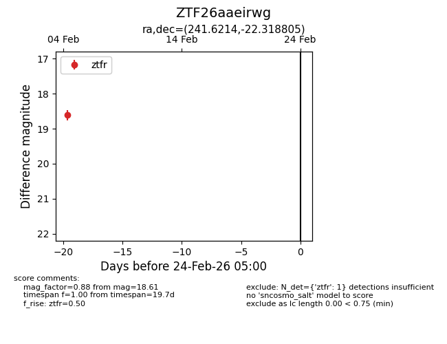
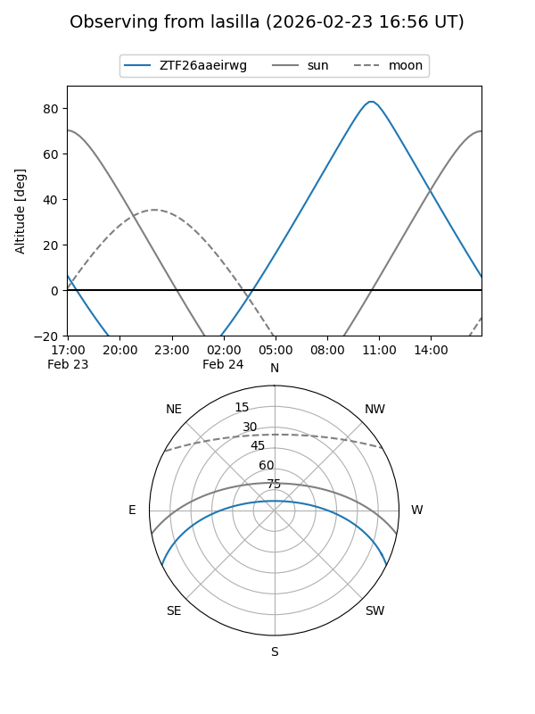
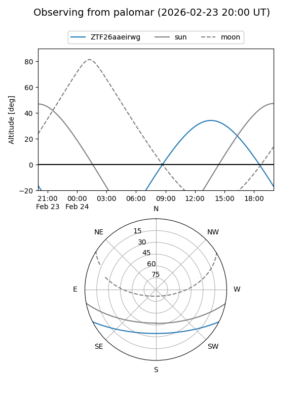

ZTF26aaeirwg
Target ZTF26aaeirwg at 2026-02-24 09:08
Aliases and brokers:
FINK: link
Lasair: link
ALeRCE: link
alt names
ZTF26aaeirwg (ztf,fink_ztf)
Coordinates:
equatorial (ra, dec) = 241.6214,-22.31881
equatorial (HMS+DMS) = 16:06:29.15,-22:19:07.70
galactic (l, b) = (351.4047,+21.68821)
Flags:
Photometry:
last ztfr=18.61
1 ztfr detections
Lightcurve

Visibility


Additional plots